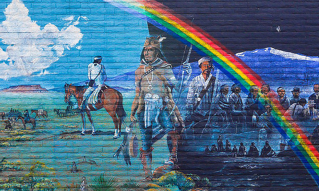
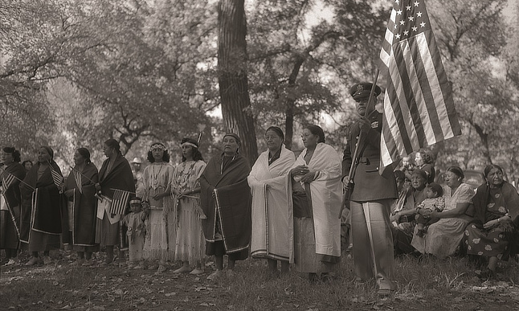

What started at the turn of the century as an effort to gain a day of recognition for the significant contributions the first Americans made to the establishment and growth of the U.S., has resulted in a whole month being designated for that purpose. One of the very proponents of an American Indian Day was Dr. Arthur C. Parker, a Seneca Indian, who was the director of the Museum of Arts and Science in Rochester, N.Y. He persuaded the Boy Scouts of America to set aside a day for the  “First Americans” and for three years they adopted such a day. In 1915, the annual Congress of the American Indian Association meeting in Lawrence, Kans., formally approved a plan concerning American Indian Day. It directed its president, Rev. Sherman Coolidge, an Arapahoe, to call upon the country to observe such a day. Coolidge issued a proclamation on Sept. 28, 1915 which declared the second Saturday of each May as an American Indian Day and contained the first formal appeal for recognition of Indians as citizens. The year before this proclamation was issued, Red Fox James, a Blackfoot Indian, rode horseback from state to state seeking approval for a day to honor Indians. On December 14, 1915, he presented the endorsements of 24 state governments at the White House. There is no record, however, of such a national day being proclaimed. The first American Indian Day in a state was declared on the second Saturday in May 1916 by the governor of New York. Several states celebrate the fourth Friday in September. In Illinois, for example, legislators enacted such a day in 1919. Presently several states have designated Columbus Day as Native American Day, but it continues to be a day we observe without any recognition as a national legal holiday. In 1990 President George H. W. Bush approved a joint resolution designating November 1990 “National American Indian Heritage Month.” Similar proclamations, under variants on the name (including “Native American Heritage Month” and “National American Indian and Alaska Native Heritage Month”) have been issued each year since 1994.
“This month brings awareness to celebrate, and recognize the many contributions made by Native people in the United States—Alaska Natives, American Indians, and Native Hawaiians—along with other Indigenous peoples in our country from across the globe. Alaska is home to nearly 40 percent of all federally recognized Tribes, with 229 being located in my home state. November, Native American Heritage Month, is a time to honor the culture and heritage that millions of Native people share with us daily. From the most northern Native community in the Arctic Slope region to the most southwestern Native community in the Aleut region in Alaska, I welcome what this month brings and hope all will join in the many events celebrating the unique history, culture and traditions of our First peoples,”